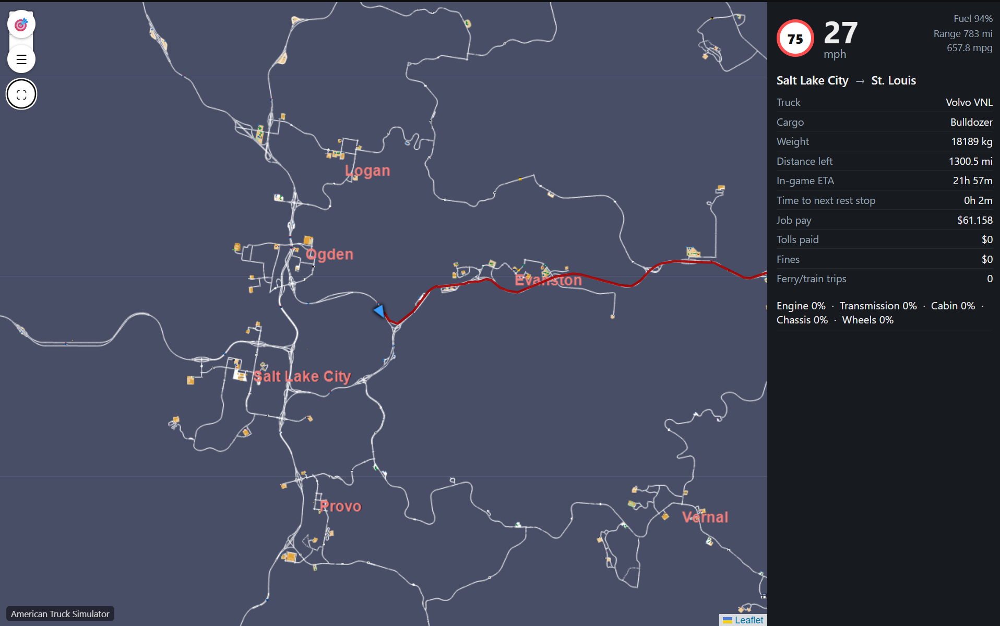

Truck Dash
A free, real-time companion dashboard for Euro Truck Simulator 2 and American Truck Simulator.
Get Started — it's freeAbout Truck Dash
Truck Dash is a browser dashboard that runs alongside Euro Truck Simulator 2 or American Truck Simulator, showing your live position on a real map, a real route to your destination, speed and speed limit, cargo, fuel, wear, and more — all in real time, for free, with no account needed.
This is the dashboard itself — you'll need the local client running (see Get Started below) for it to show your own live data: Open the dashboard →
Real map & routes
Actual road network for both games, with a live route calculated to your destination — not a straight line.
Speed & limits
Google Maps-style speed limit sign, cruise control readout, and alerts when you're over the limit.
Truck vitals
Fuel, range, consumption, and wear per part, with warnings before something breaks down.
Any device
Works on desktop and mobile, in portrait or landscape, with a fullscreen mode for a clean view.
Get Started (free)
Three one-time steps and you're set. No installer, no account, no admin rights needed.
Install the SCS telemetry plugin
Truck Dash reads data through the game's official telemetry SDK. Download the plugin and copy only the .dll file (not the whole downloaded folder) into your game's install folder, inside bin\win_x64\plugins\ — create that plugins folder if it doesn't exist yet. Once per game.
Download the Truck Dash client
A small, portable program that reads the game's telemetry and opens your browser, already connected. No install, no Python needed.
Run it and start driving
Open the game, run the client, and your browser opens automatically — already paired and live.
This is what it looks like while driving:

Contact
Questions, bugs, or ideas? Reach out directly: